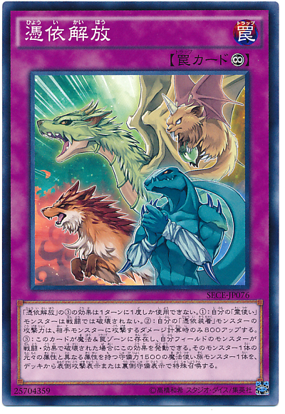

빙의해방의 ③의 효과는 1턴에 1번밖에 사용할 수 없다.
①: 자신의 령사 몬스터는 전투로는 파괴되지 않는다.
②: 자신의 빙의장착 몬스터의 공격력은, 상대 몬스터에게 공격하는 데미지 계산시만 800 올린다.
③: 이 카드가 마법 ＆ 함정 존에 존재하고, 자신 필드의 몬스터가 전투 / 효과로 파괴되었을 경우에 이 효과 를 발동할 수 있다. 그 몬스터 1장의 원래 속성과 다른 속성을 가지는 수비력 1500인 마법사족 몬스터 1장 을, 덱에서 앞면 공격 표시 또는 뒷면 수비 표시로 특수 소환한다.